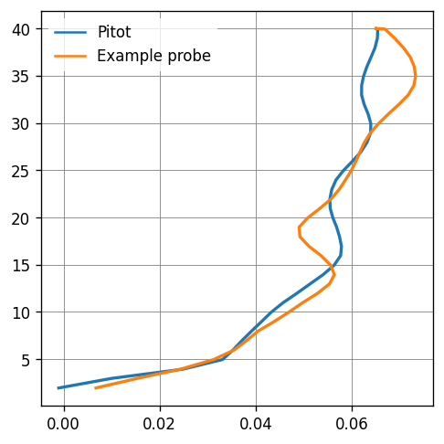
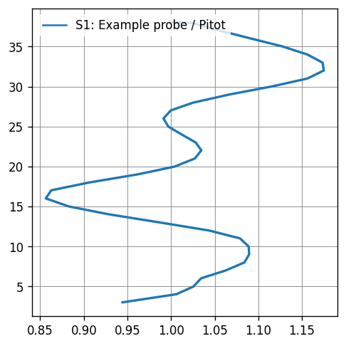

Calculating topographic factors from vtm#
Define S1 probes
[2]:
import pathlib
from cfdmod.s1.probe import S1Probe
field_data_path = pathlib.Path("./fixtures/tests/s1/vtm/example.vtm")
pitot_probe = S1Probe(p1=[1, 10, 1], p2=[1, 10, 40], numPoints=1000)
example_probe = S1Probe(p1=[10, 10, 1], p2=[10, 10, 40], numPoints=1000)
pitot_probe, example_probe
[2]:
(S1Probe(p1=[1.0, 10.0, 1.0], p2=[1.0, 10.0, 40.0], numPoints=1000),
S1Probe(p1=[10.0, 10.0, 1.0], p2=[10.0, 10.0, 40.0], numPoints=1000))
Extract data from multiblock dataset
[3]:
from cfdmod.io.vtk.probe_vtm import create_line, get_array_from_filter, probe_over_line, read_vtm
reader = read_vtm(field_data_path)
pitot_line = create_line(pitot_probe.p1, pitot_probe.p2, pitot_probe.numPoints - 1)
probe_line = create_line(example_probe.p1, example_probe.p2, example_probe.numPoints - 1)
pitot_filter = probe_over_line(pitot_line, reader)
probe_filter = probe_over_line(probe_line, reader)
pitot_data = get_array_from_filter(pitot_filter, array_lbl="ux")
probe_data = get_array_from_filter(probe_filter, array_lbl="ux")
pitot_data[:10], probe_data[:10]
[3]:
(array([-0.00102558, -0.00102558, -0.00102558, -0.00102558, -0.00102558,
-0.00102558, -0.00102558, -0.00102558, -0.00102558, -0.00102558],
dtype=float32),
array([0.00672358, 0.00672358, 0.00672358, 0.00672358, 0.00672358,
0.00672358, 0.00672358, 0.00672358, 0.00672358, 0.00672358],
dtype=float32))
Create profiles from extracted data
[4]:
import numpy as np
from cfdmod.s1.profile import Profile
pitot_heights = np.linspace(pitot_probe.p1[2], pitot_probe.p2[2], pitot_probe.numPoints)
probe_heights = np.linspace(example_probe.p1[2], example_probe.p2[2], example_probe.numPoints)
pitot_profile = Profile(heights=pitot_heights, values=pitot_data, label="Pitot")
probe_profile = Profile(heights=probe_heights, values=probe_data, label="Example probe")
pitot_profile.smoothen_values()
probe_profile.smoothen_values()
s1_profile = probe_profile / pitot_profile
Plotting Velocity Profiles extracted
[5]:
import matplotlib.pyplot as plt
from cfdmod.s1.plotting import set_style_tech
fig, ax = plt.subplots(figsize=(10 / 2.54, 10 / 2.54), constrained_layout=True, dpi=120)
ax.plot(pitot_profile.values, pitot_profile.heights, label=pitot_profile.label)
ax.plot(probe_profile.values, probe_profile.heights, label=probe_profile.label)
ax.legend()
set_style_tech(ax)
plt.show(fig)

Plotting S1
[6]:
fig, ax = plt.subplots(figsize=(10 / 2.54, 10 / 2.54), constrained_layout=True, dpi=120)
ax.plot(s1_profile.values[2:], s1_profile.heights[2:], label=s1_profile.label)
# ax.legend(bbox_to_anchor=(1.2, 1))
ax.legend(loc="upper left")
set_style_tech(ax)
plt.show(fig)
